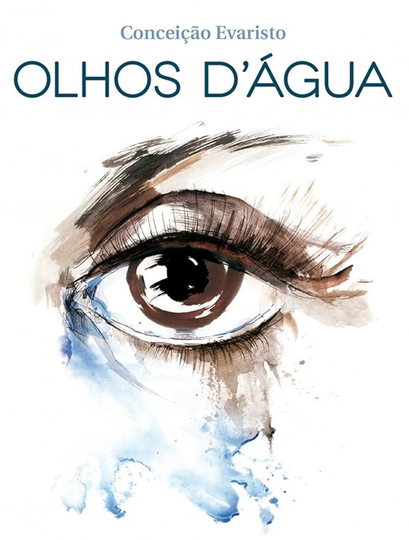

Olhos d’Água é uma coletânea de contos da escritora brasileira Conceição Evaristo que apresenta histórias marcadas pelas experiências, memórias e lutas da população negra, especialmente das mulheres negras.
Por meio de personagens que enfrentam a pobreza, o racismo, a violência, as desigualdades sociais e os desafios da vida cotidiana, a autora dá voz a sujeitos frequentemente invisibilizados pela sociedade. Com uma escrita sensível e profunda, a obra aborda temas como ancestralidade, maternidade, identidade, resistência, afeto e pertencimento.
O livro convida o leitor a refletir sobre as desigualdades raciais e sociais, reconhecendo a força das memórias, das histórias e das experiências humanas.
Mensagem central: a obra valoriza as vozes, as vivências e a resistência da população negra, mostrando que contar histórias também é uma forma de preservar a memória e lutar contra o silenciamento.
Objetivo: reconhecer a grafia correta de palavras relacionadas à obra “Olhos d’Água” e a temas presentes na literatura de Conceição Evaristo, como memória, identidade, ancestralidade, desigualdade, resistência e experiências das mulheres negras.
Orientações: leia cada questão com atenção e escolha a alternativa correta.